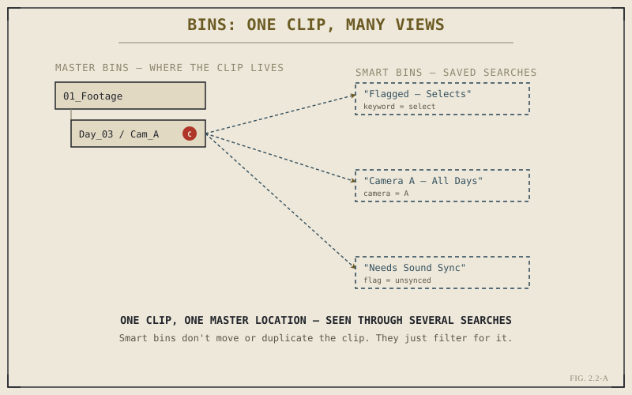

The Media Pool is the single most-used panel in the entire application — it's visible on nearly every page, as Chapter 1.5 mentioned, and it's where every clip in your project lives, organized into bins. It's tempting to treat bins as just folders with a different name, and for the simplest projects, that mental model won't get you into much trouble. But bins can do things a filesystem folder structure fundamentally can't, and understanding that difference is what separates an editor who's merely storing footage from one who can actually find anything on a busy project, fast, under deadline pressure.
A Bin Is an Organizational View, Not a Storage Location
On your operating system, a file lives in exactly one folder at a time — that folder is a physical location, and the file's path describes where it actually sits on disk. A Media Pool bin isn't that. A bin is an organizational container inside the project database from Chapter 2.1, holding references to clips, not the clips themselves. The clip's actual video file still sits wherever it sits on your storage — the bin is simply how your project chooses to present and group a reference to it.
This distinction matters immediately in one practical way: reorganizing bins, renaming them, or moving a clip from one bin to another inside Resolve never touches the underlying file on disk. You're rearranging the view, not the footage. This is the same non-destructive principle from Chapter 1.1 showing up again at the organizational level — you can restructure your entire Media Pool as many times as a project needs without any risk to the actual camera files.
Master Bins Versus Smart Bins
Most of your organizing happens in what are sometimes called master bins — the manually created, manually populated bins where you decide a clip belongs, typically mirroring something like shoot day, camera, or scene. This is the straightforward, folder-like use of bins, and it's a fine default for smaller projects: a bin per day, a sub-bin per camera, done.
Smart bins are where the "not just folders" idea becomes concrete. A smart bin isn't a location you manually place clips into — it's a saved search, built from criteria like keywords, camera metadata, flags, or clip color labels, that automatically populates with every clip in the project matching those criteria, updating live as new footage comes in or gets tagged. A smart bin called "Flagged — Selects" doesn't contain clips in the way a master bin does; it continuously shows you whichever clips currently carry a "select" flag, wherever their master bin location actually is.

One clip, one master bin location — seen through several smart bin searches at once.
A folder can only ask "what's physically inside me." A smart bin can ask "what in this entire project currently matches these criteria" — and keep asking, automatically, as the project changes.
This is a genuinely different capability than nested folders offer. A single clip can be physically organized in "Day 03 / Camera A," and simultaneously show up, automatically and without being copied or moved, inside "Camera A — All Days," "Flagged — Selects," and "Needs Sound Sync" — three completely different smart bins built from three different questions about the footage. Chapter 2.4 covers exactly how to build the metadata and flags that smart bins search against; this chapter's job is just to establish why the capability is worth building toward.
Power Bins: Organization That Survives Across Projects
One more bin variant worth knowing early: Power Bins. A standard bin, master or smart, belongs to one project and disappears from view when you close it. Power Bins are shared across every project you open on that system — useful for a recurring library of assets you don't want to re-import each time, like a studio's logo bumper, a set of licensed music beds, or a title template you reuse across every job. Power Bins won't matter for your first few projects, but it's worth knowing the concept exists once you notice yourself importing the same handful of assets into a new project every single time.
Deleting From a Bin Versus Deleting From Disk
There's exactly one place this chapter's non-destructive theme has a real exception, and it's worth flagging clearly rather than letting you discover it by accident. Removing a clip from a bin — even every bin it appears in — only removes the project's reference to it. The file on disk is untouched, exactly as Chapter 2.1 described. Resolve also offers a separate, explicit "Delete from disk" action, which does what it says: it deletes the actual file. That option exists for legitimate cleanup work, but it's the one place in ordinary bin management where you're no longer just rearranging a view — you're taking an action Chapter 1.1's whole non-destructive premise doesn't apply to. Treat it accordingly, and don't reach for it out of habit the way you might reach for "remove from bin."
With bins understood as flexible, searchable views rather than rigid storage locations, Chapter 2.3 moves on to the practical work of actually getting footage into the project in the first place — importing, and organizing it well from the moment it arrives, so the bin structure you build actually holds up as a project grows.
Key Concepts to Remember
- A bin is an organizational view inside the project database, not a physical storage location — moving clips between bins never touches the file on disk.
- Smart bins are saved searches, not storage — a clip can appear in several smart bins at once without being duplicated or moved.
- Power Bins persist across every project on a system — useful for recurring assets like logos, music beds, or title templates.
- "Remove from bin" is safe and non-destructive; "Delete from disk" is a genuine exception that actually deletes the file — know the difference before you click.
Cross-References Forward
| → Ch. 2.3 | Covers importing footage and setting up a bin structure that stays usable as a project grows. |
| → Ch. 2.4 | Shows how to build the metadata, flags, and keywords that smart bins search against. |
| → Pt. XV | Troubleshooting & Diagnosis — covers relinking and recovering media when a bin's references can't resolve. (Not yet published.) |